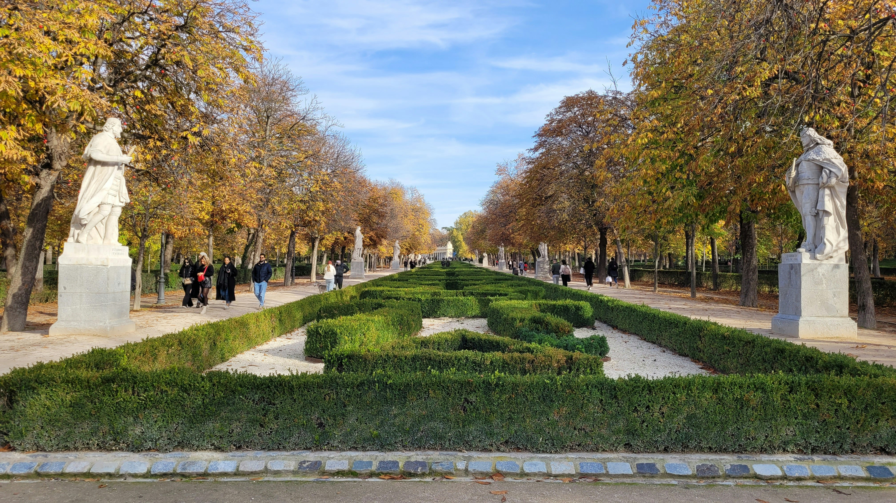

Ciudadanía
Explorar Madrid y comprender la proximidad a zonas verdes, con sus límites a la vista.
Explorar MadridNaturaleza, ciudad y datos
La ciudad también se entiende desde sus parques. Explora Madrid y descubre cómo los datos geográficos pueden ayudarnos a estudiar la proximidad a sus zonas verdes.
Prototipo WebGIS Madrid Fase B.4A
Diferentes miradas, un mismo territorio
Una forma de acercar la información geográfica a quienes viven, piensan y estudian la ciudad.
Explorar Madrid y comprender la proximidad a zonas verdes, con sus límites a la vista.
Explorar MadridConocer un enfoque espacial para estudiar la relación entre ciudad y naturaleza.
Conocer el enfoqueSeguir el paso de los datos de ArcGIS Pro a su futura integración y análisis web.
Del dato al mapaEl territorio como punto de partida
Selecciona una ubicación, elige un radio geodésico de 500 m o 1 km y consulta cuántos polígonos de espacios verdes intersectan el buffer.
La consulta se ejecuta al pulsar Analizar zona. Datos: © OpenStreetMap contributors (ODbL), extraídos mediante Geofabrik y preparados en ArcGIS Pro.
Transparencia desde el origen
¿Qué parques y jardines quedan dentro de un radio alrededor de una ubicación? Este es el análisis previsto para la siguiente fase.
La capa actual procede de OpenStreetMap, extraída mediante Geofabrik y preparada en ArcGIS Pro. Incluye parques, bosques y zonas recreativas según el campo fclass.
Consultar fuente y licenciaSe generan buffers geodésicos de 500 m y 1 km alrededor de un punto, con distancias en metros. Su geometría y los recuentos se contrastarán con ArcGIS Pro.
La fase B.4A encuadra el buffer y muestra los polígonos intersectados por categoría y hasta diez entidades con nombre. La proximidad es en línea recta; el contraste independiente en ArcGIS Pro sigue pendiente.
Consulta espacial por intersecciónDel dato al mapa
El flujo metodológico previsto, desde la preparación de la información hasta la comunicación de resultados.
Revisar, limpiar y exportar las capas desde ArcGIS Pro a GeoJSON WGS84.
GeoJSON entregadoConectar los GeoJSON al visor y comprobar sus geometrías y atributos.
Carga y simbología · fase B.1Construir el radio, identificar entidades reales y contrastar los cálculos.
Pendiente · fase BMostrar los parques encontrados junto a las fuentes y límites del análisis.
Interfaz preparadaGeografía para comprender la ciudad
GreenSpot es un proyecto de portfolio y demostración técnica que une cartografía web, naturaleza urbana y comunicación de datos.
Prototipo independiente. No es una herramienta oficial del Ayuntamiento de Madrid.
Volver al mapa